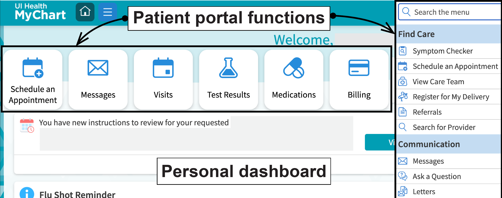
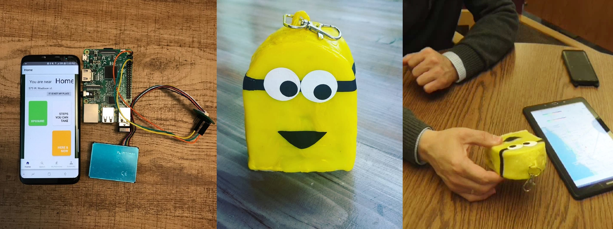
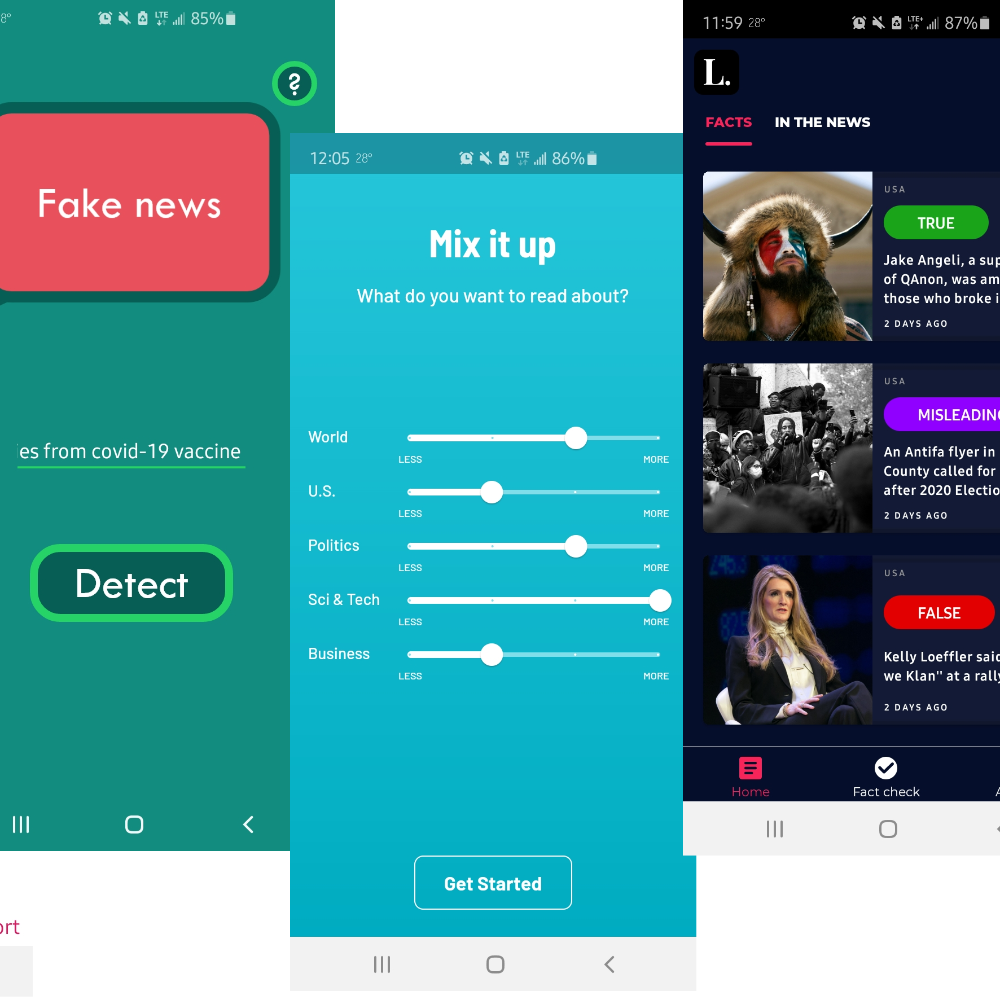

Designing and building systems that make sense of complexity, grounded in research, shaped by real users, and focused on meaningful impact
My research and my practice are asking the same question: why do well-intentioned systems lose the people they're meant to serve?
In my PhD research, I study this from a healthcare perspective. I investigate how older adults engage with patient portals, and what their digital behavior can reveal about access, equity, and cognitive health. In industry, I spent three years at Caterpillar asking the same question of enterprise engineering software. I conducted user research, I worked inside prototyping systems, from early sketches to high-fidelity prototypes using tools like Figma, and built solutions to close the gap between how a platform was designed and how engineers actually used it.
I've also built the things; Android apps, AI-backed prototypes integrating cloud APIs, interactive data tools, and wearable prototypes, because understanding what should exist and knowing how to make it exist are, for me, the same practice.
When I’m not doing UX, I’m usually being outwitted by my toddler.
The work. Redesigned interfaces and built UI components for an internal engineering platform used daily by Caterpillar engineers; modernizing legacy workflows and improving usability across core tasks. Partnered with product, engineering, and tech support stakeholders inside agile delivery cycles.
The research. Conducted user research with two distinct audiences, engineers using the software and the tech support team fielding their issues, to identify pain points, validate design directions, and translate findings into actionable design recommendations. Methods included usability testing, contextual interviews, and iterative design reviews with stakeholders.
What I took from it. An enterprise UX practice focused on making complex systems actually work for the people using them. Specific details under NDA.
Mixed-methods UX research spanning enterprise health platforms, environmental sensing, accessibility, and misinformation published at top HCI venues (CHI, IEEE ICHI, ASSETS, MobileHCI, UbiComp).

My dissertation focuses on understanding why older adults do not adopt or continue using patient portals, and what it takes to close that gap. Across multiple studies, I examine how real-world digital behavior reflects how older adults and people with ADRD engage with these systems, including patterns that may signal cognitive decline. At a broader level, my work synthesizes two decades of research on patient portal use among older adults. The consistent finding is not that older adults are unwilling or unable to use these tools, but that the barriers they face are largely driven by design and support gaps within the systems themselves. The goal of this work is to surface those gaps and inform the design of more accessible, inclusive digital health systems.
Details to be shared upon publication.
Patient Portal Use Among Older Adults: A Systematic Review and Meta-Analysis More Older Adults Try Patient Portals in Recent Years, but Many Don't Continue: A Meta-Analysis
A four-year arc: two publications, a master's thesis, one hand-painted minion keychain, and a full end-to-end build. Designed and developed myCityMeter: hardware sensor unit, firmware, and an Android mobile app. I ran a mixed-methods study (n=321 survey + 7 technology probe interviews) to understand what people actually need from personal pollution monitoring. Key finding: the barrier is not the technology; it is the perceived lack of actionable next steps.
myCityMeter: Helping older adults manage the environmental risk factors for cognitive impairment Towards Self-Tracking Personal Pollution Exposure using Wearables (Master's Thesis) Personal Air Pollution Monitoring Technologies: User Practices and Preferences
Sparked by COVID-19 misinformation. Led end-to-end: systematic review of 8,372 smart-phone apps screened to 45, plus 11 interviews with older adults in the US and Jordan. Not a single participant used a fact-checking app despite universal concern about misinformation. The gap is not a user failure; it is a design and trust problem.
A review of smartphone fact-checking apps and their (non) use among older adultsBuilt a fully functional tablet app using Unreal Engine and MetaHuman. The app showed a photorealistic avatar responding to user input with synchronized facial expressions and body language in real time, backed by AWS conversational API and supported by an AI speech agent. Designed for pre-clinical mental health screening with incarcerated women. Working prototype completed before the project continued with another team. This project represents the range I bring: AI system integration, clinical application, and the kind of research grounding that keeps technically ambitious work human.
Quantitative analysis on a survey study (n=138) examining how proficiency and emotional states shape older adults' preferences for tech support. Multiple regression and mediation analysis showed proficiency and confidence jointly predict preference for self-reliant support and its perceived effectiveness.
How proficiency and feelings impact the preference and perception of mobile technology support in older adults